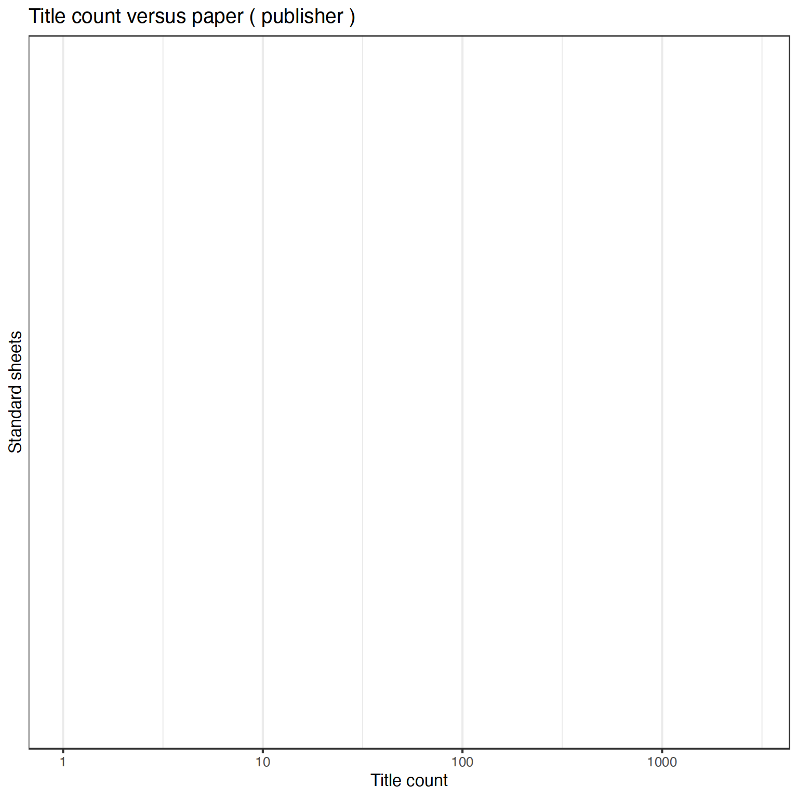

11 Publishers
12995 unique publishers
61144 documents have unambiguous publisher information (85%). This includes documents identified as self-published; the author name is used as the publisher in those cases (if known).
Conversions from original to final names (only non-trivial conversions shown)
The 20 most common publishers are shown with the number of documents.

Title count versus paper consumption (top publishers):

| publisher | titles | paper |
|---|---|---|
| [G. W. Londicer] | 1823 | 0 |
| [J. C. Frenckell] | 1207 | 0 |
| Edlund | 979 | 0 |
| G. W. Edlund | 896 | 0 |
| Karisto | 663 | 0 |
| Otava | 2168 | 0 |
| Söderström | 1188 | 0 |
| Tekijä | 1555 | 0 |
| typis Frenckellianis | 1181 | 0 |
| WSOY | 2922 | 0 |